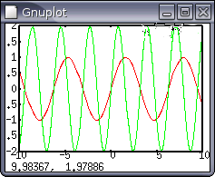

Relaciona información e incertidumbre
Relaciona dato y señal
Diferencia señalización y transmisión
Relaciona bit y símbolo, ¿cuál es su relación matemática?
¿En qué crees que se diferencia un bit matemático de uno físico?
Relaciona código y símbolo
¿Qué entenderías por código eficiente?¿Qué relación puede
tener con la compresión?
¿En qué se diferencian los datos que se transmiten por el teléfono tradicional y por el telégrafo?
¿En qué se parecen y en qué se diferencian un telégrafo y un
modem?
¿Cuándo y quién inventa la centralita telefónica automática?¿Por qué?
¿Cuáles son las ventajas y las desventajas de la conmutación de circuitos y de paquetes?
¿Qué significan para ti las palabras frecuencia, ancho de banda y multiplexión?
¿Que diferencias hay entre la arquitectura de una LAN y una WAN?
¿Qué instituciones son ISO, ANSI, DIN, ITU, TIA, ETSI, IEEE,
IETF, W3C?¿A qué se dedican?
Cambia de bases (bin, oct, hex): (b)1011010011,(o)237,(h)AD5
Calcula la tabla de verdad de la siguiente operación lógica: A y (no A o B); [de otra manera, a*(!a+b) ]
Diferencia entre protocolo y servicio
Diferencia entre las funciones de las capas de enlace, transporte y aplicación
¿Qué es una dirección IP? ¿Y un puerto?
Distingue las topologías en bus, en anillo y en estrella
¿Qué es la topología física de una red? ¿Y la lógica?
¿Qué es y para qué sirve un analizador de tráfico de red?
Describe un protocolo para concertar una cita para ir al cine en el que se determine si se acepta la cita, a qué película y a qué sesión usando algún tipo de mensajería instantánea. ¿Qué capas distinguirías en este sistema?
Investiga qué topologías física y lógica tiene la red local del aula.
Atenuación, símbolos por segundo y capacidad de un canal
Ancho de banda de una señal y de un medio.
Número de símbolos de la fuente y capacidad y ancho de banda del canal
Señalización Manchester y NRZ
Modulación ASK, PSK y QAM
Frecuencia de muestreo y ruido de cuantización
Acivadades del wikilibro: tema
3
¿Cuántos radianes hay en 180°? Simplifica las siguientes expresiones:
(a) sen(2πft - φ) + sen(2πft + φ) ; (b) sen(2πft) + sen(2πft - φ)
Compara la frecuencia relativa y la longitud de onda de las notas musicales. La velocidad del sonido es 330m/s y las frecuencias de las notas de una escala musical son:
Nota |
DO |
RE |
MI |
FA |
SOL |
LA |
SI |
DO |
Frecuencia |
264 |
297 |
330 |
352 |
396 |
440 |
495 |
528 |
Si la curva roja representa el sen (2πt), ¿Qué función corresponde a la línea verde? Es decir, si se puede expresar como: A sen(2πft+φ); ¿Cuánto valen A, f y φ?
¿Cuál es la capacidad para un canal de un "teletipo" de 300Hz de ancho de banda con una relación señal-ruido de 3dB?
Sea un canal con una capacidad de 20Mbps, si su ancho de banda es de 3MHz ¿Cuál es la relación señal-ruido admisible para consiguer dicha capacidad?
Una señal se digitaliza utilizando 10 bits PCM.¿Qué relación señal-ruido de cuantización tiene?
Si consideramos una señal de audio cuyas componentes espectrales están comprendidas en el rango de 300Hz a 3.000Hz, ¿Qué frecuencia de muestreo y número de bits por muestra necesitaremos para conseguir una relación SNR de 30dB, qué velocidad de transmisión se requiere?
Transmisión síncrona y asíncrona.
Ventajas y desventajas de la corrección de errores hacia delante y hacia atrás.
Calcula el CRC-32 del mensaje "La subcapa MAC trata con
tramas". ¿Cómo lo has calculado?¿Qué representa
matemáticamente el resultado?